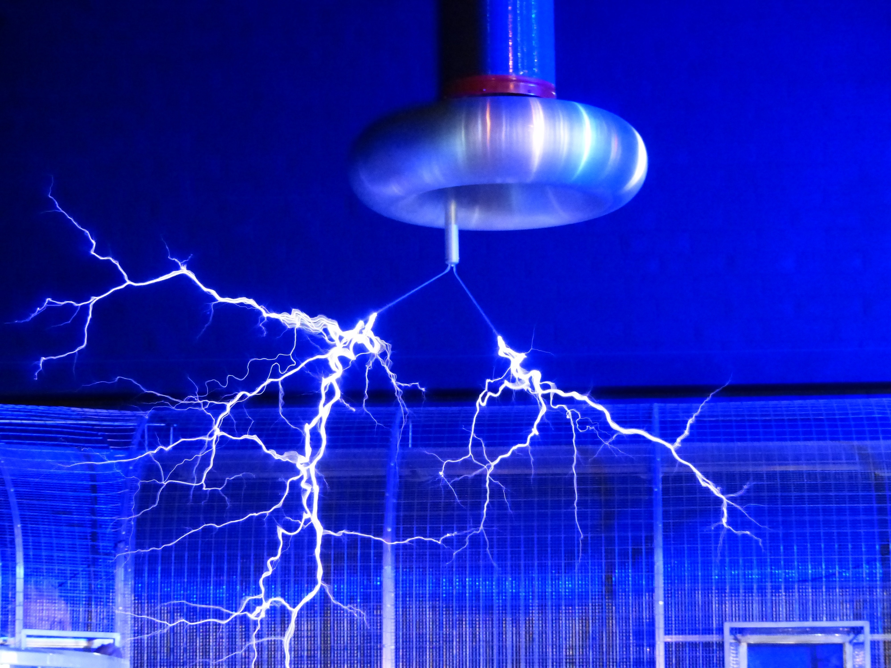
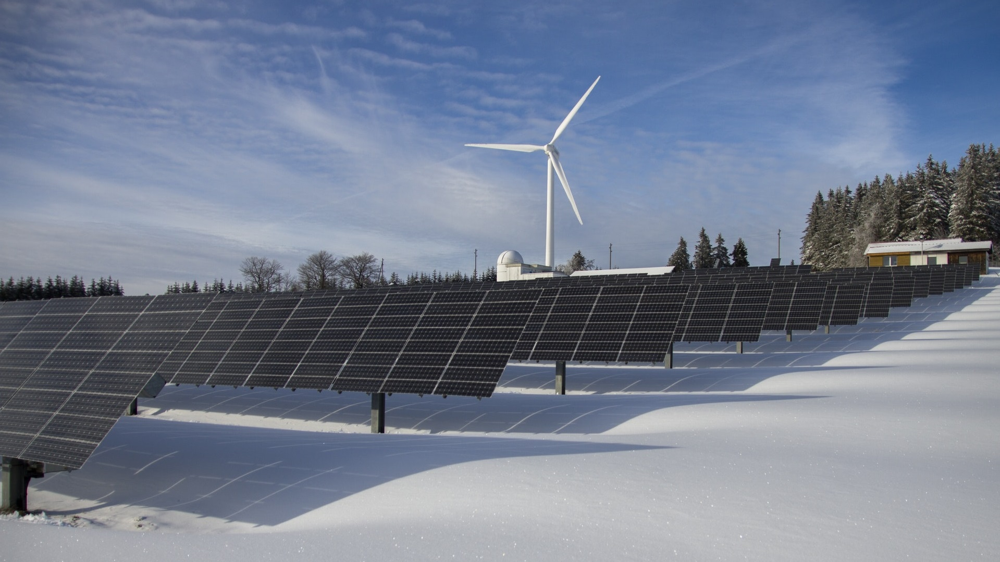
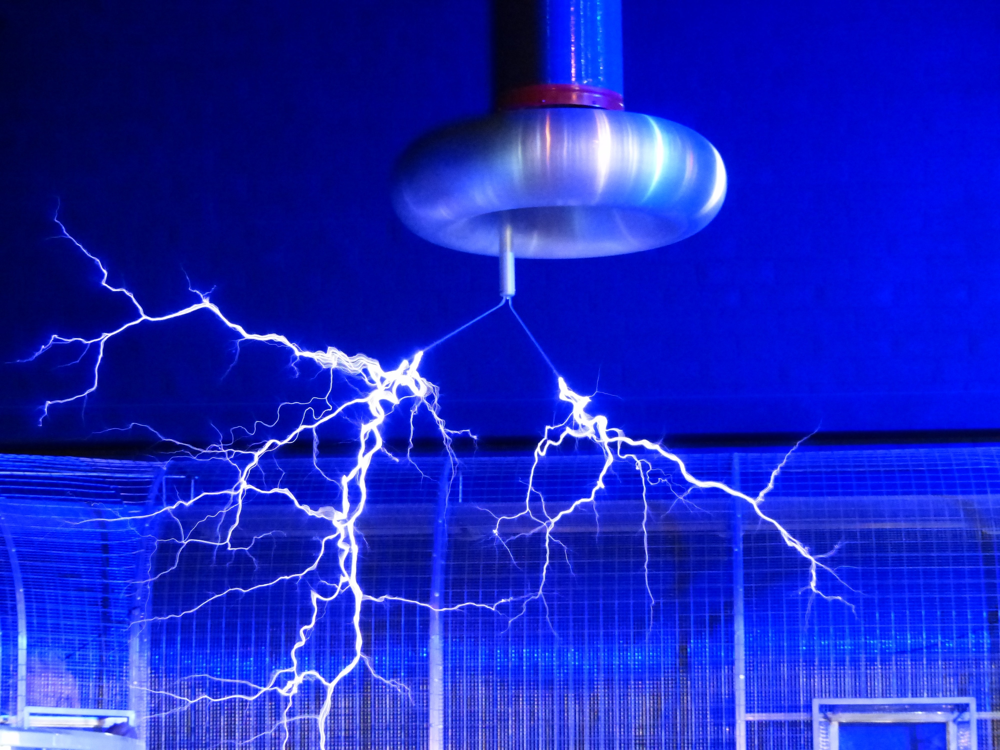
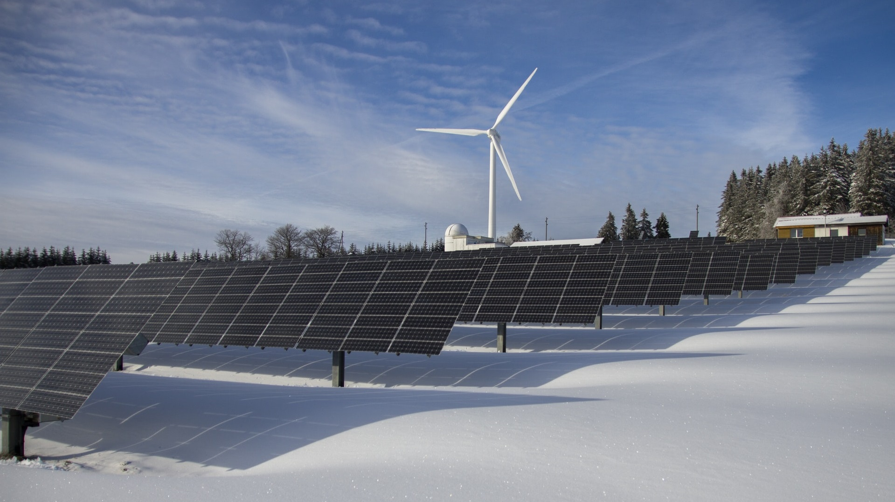

Medo de raios?
O Brasil é o país em que tem maior incidência de descargas atmosféricas por ano, os famosos raios.

Fique esperto com os peixes!
Alguns peixes usam a eletricidade para abater suas presas. A enguia, a raia e o torpedo são alguns desses peixes. A enguia pode emitir descargas elétricas de 600 volts, suficientes para paralisar um homem adulto.

Você sabia?
As bolas alaranjadas e avermelhadas colocadas nos fios de alta tensão que cruzam as rodovias servem para sinalização visual para os pilotos das aeronaves, quando tiverem que utilizar as estradas para pousos de emergência.